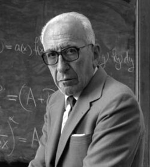

Alberto Calderón | |
|---|---|
 | |
| Born | September 14, 1920 Mendoza, Argentina |
| Died | April 16, 1998 (aged 77) |
| Alma mater | University of Buenos Aires University of Chicago |
| Known for | Partial differential equations Singular integral operators Interpolation spaces |
| Spouses | |
| Children | 2 |
| Awards | Bôcher Memorial Prize (1979) Leroy P. Steele Prize (1989) Wolf Prize (1989) Steele Prize (1989) National Medal of Science (1991) |
| Scientific career | |
| Fields | Mathematics |
| Thesis | I. On the Ergodic Theorems. II. On the Behavior of Harmonic Functions at the Boundary. III. On the Theorem of Marcinkiewicz and Zygmund (1950) |
| Antoni Zygmund | |
Doctoral students | Irwin Bernstein Michael Christ Miguel de Guzmán Carlos Kenig Cora Sadosky |
Alberto Pedro Calderón (September 14, 1920 – April 16, 1998) was an Argentine mathematician. His name is associated with the University of Buenos Aires, but first and foremost with the University of Chicago, where Calderón and his mentor, the analyst Antoni Zygmund, developed the theory of singular integral operators.[1][2][3][4] This created the "Chicago School of (hard) Analysis" (sometimes simply known as the "Calderón-Zygmund School").[1][2][4][5][6]
Calderón's work ranged over a wide variety of topics: from singular integral operators to partial differential equations, from interpolation theory to Cauchy integrals on Lipschitz curves, from ergodic theory to inverse problems in electrical prospection.[1][3] Calderón's work has also had a powerful impact on practical applications including signal processing, geophysics, and tomography.[1][3]
Alberto Pedro Calderón was born on September 14, 1920, in Mendoza, Argentina, to Don Pedro Calderón, a physician (urologist), and Haydée. He had several siblings, including a younger brother, Calixto Pedro Calderón, also a mathematician. His father encouraged his mathematical studies. After his mother's unexpected death when he was twelve, he spent two years at the Montana Knabeninstitut, a boys' boarding school near Zürich in Switzerland, where he was mentored by Save Bercovici, who interested him in mathematics. He then completed his high school studies in Mendoza.
Persuaded by his father that he could not make a living as a mathematician, he entered the University of Buenos Aires, where he studied engineering. After graduating in civil engineering in 1947, he got a job in the research laboratory of the geophysical division of the state-owned oil company, the YPF (Yacimientos Petrolíferos Fiscales).
While still working at YPF, Calderón became acquainted with the mathematicians at the University of Buenos Aires: Julio Rey Pastor, the first professor in the Institute of Mathematics, his assistant Alberto González Domínguez (who became his mentor and friend), Luis Santaló and Manuel Balanzat. At the YPF Lab Calderón studied the possibility of determining the conductivity of a body by making electrical measurements at the boundary; he did not publish his results until 1980, in his short Brazilian paper.[7] see also On an inverse boundary value problem and the Commentary by Gunther Uhlmann.[8] It pioneered a new area of mathematical research in inverse problems.
Calderón then took up a post at the University of Buenos Aires. Antoni Zygmund of the University of Chicago, arrived there in 1948 at the invitation of Alberto González Domínguez and Calderón was assigned as his assistant. Zygmund invited Calderón to work with him, and in 1949 Calderón arrived in Chicago with a Rockefeller Fellowship. He was encouraged by Marshall Stone to obtain a doctorate, and with three recently published papers as dissertation, Calderón obtained his PhD in mathematics under Zygmund's supervision in 1950.
The collaboration reached fruition in the Calderón-Zygmund theory of singular integrals, and lasted more than three decades. The memoir of 1952[9] was influential for the Chicago School of hard analysis. The Calderón-Zygmund decomposition lemma, invented to prove the weak-type continuity of singular integrals of integrable functions, became a standard tool in analysis and probability theory. The Calderón-Zygmund Seminar at the University of Chicago ran for decades.
Calderón contributed to the theory of differential equations, with his proof of uniqueness in the Cauchy problem[10] using algebras of singular integral operators, his reduction of elliptic boundary value problems to singular integral equations on the boundary (the "method of the Calderón projector"),[11] and the role played by algebras of singular integrals, through the work of Calderón's student R. Seeley, in the initial proof of the Atiyah-Singer index theorem,[12] see also the Commentary by Paul Malliavin.[8] The development of pseudo-differential operators by Kohn-Nirenberg and Hörmander also owed much to Calderón and his collaborators, R. Vaillancourt and J. Alvarez-Alonso.
Also, Calderón insisted that the focus should be on algebras of singular integral operators with non-smooth kernels to solve actual problems arising in physics and engineering, where lack of smoothness is a natural feature. It led to what is now known as the "Calderón program", with major parts: Calderón's study of the Cauchy integral on Lipschitz curves,[13] and his proof of the boundedness of the "first commutator".[14] These papers stimulated research by other mathematicians in the following decades; see also the later paper by the Calderón brothers[8][15] and the Commentary by Y. Meyer.[8]
Work by Calderón in interpolation theory opened up a new area of research,[16] see also the Commentary by Charles Fefferman and Elias M. Stein,[8] and in ergodic theory, his basic paper[17] (see also the Commentary by Donald L. Burkholder,[8] and[18]) formulated a transference principle that reduced the proof of maximal inequalities for abstract dynamical systems to the case of the dynamical system on the integers, on the reals or, more generally, on the acting group.
In his academic career, Calderón taught at many different universities, but primarily at the University of Chicago and the University of Buenos Aires. Calderón together with his mentor and collaborator Zygmund, maintained close ties with Argentina and Spain, and through their doctoral students and their visits, strongly influenced the development of mathematics in these countries.[8]
He was also visiting professor at universities including the University of Buenos Aires, Cornell University, Stanford University, National University of Bogotá, Colombia, Collège de France, Paris, University of Paris (Sorbonne), Autónoma and Complutense Universities, Madrid, University of Rome and Göttingen University.
Calderón was recognized internationally for his outstanding contributions to Mathematics as attested to by his numerous prizes and membership in various academies.[1][3] He gave many invited addresses to universities and learned societies. In particular he addressed the International Congress of Mathematicians: a) as invited lecturer in Moscow in 1966 and b) as plenary lecturer in Helsinki in 1978. The Instituto Argentino de Matemática (I.A.M.), based in Buenos Aires, a prime research center of the National Research Council of Argentina (CONICET), now honors Alberto Calderón by bearing his name: Instituto Argentino de Matemática Alberto Calderón. In 2007, the Inverse Problems International Association (IPIA) instituted the Calderón Prize, named in honor of Alberto P. Calderón, and awarded to a "researcher who has made distinguished contributions to the field of inverse problems broadly defined".[19]
{{cite web}}: CS1 maint: multiple names: authors list (link)
{kind=link}